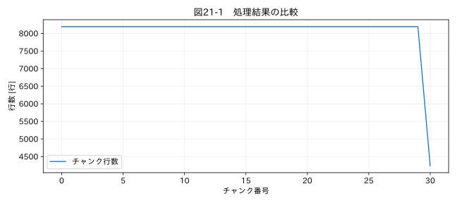

第VI部 実務の自動化 / 第21章
この章の節
大量のExcel・CSVを一括処理する
学習目標
ファイルごとの読込条件を管理し、処理失敗を記録してバッチを実行する。チャンク処理で計算できる量と、境界状態を必要とする量を区別する。
21.1 百個のファイルには百通りの問題がある
一つのExcelが読めても、フォルダ全体を処理できるとは限らない。途中で見出しが変わる、単位が変わる、別試験のファイルが混ざる、保存中の一時ファイルがある、といった問題が出る。まずファイル一覧、サイズ、更新日時、試験ID、列構成を点検する。
Path(folder).glob('*.csv') はCSV候補を列挙する。大文字の拡張子、サブフォルダ、Excelの ~$ で始まるロックファイルをどう扱うかも決める。最終アプリは明示指定したファイル、または指定ディレクトリ直下の.csvと.xlsxを対象にする。再帰探索を暗黙に行わず、出力を入力として再処理しない構造にする。
21.2 スキーマを契約として扱う
スキーマは列名、型、単位、必須項目などの定義である。「温度」と「温度[℃]」が同じ測定位置を指すなら、設定ファイルで同じ内部名へ対応させられる。しかし「入口温度」と「出口温度」は似た名前でも別の量である。文字列の近さだけで自動統合しない。
同じバッチ内の入力は同じ設定に適合する必要がある。最終アプリでは必要列が欠けたファイルをエラーとして記録する。異なる機器形式が混在する場合は、形式ごとの設定を使って別実行する。自動判別を追加するなら、判別根拠と曖昧時の停止条件も必要だ。
21.3 チャンク処理の基本
CSVは pd.read_csv(..., chunksize=8192) のように分割して読める。全体をメモリへ載せずに、件数や合計などを集計できる。全体の平均は「各チャンクの平均の単純平均」ではなく、合計値の総和を有効件数の総和で割る。最後のチャンクだけ短い場合、単純平均は重みを誤る。
標準偏差は各チャンクの標準偏差の平均では求められない。件数n、平均μ、偏差平方和M2を持ち、二群A、Bの差δ=μB−μAに対して、M2 = M2A + M2B + δ² nA nB/(nA+nB) で結合する方法がある。巨大な値の平方和から平均平方を引く計算は桁落ちしやすい。
関連する詳細実験は実践補講に掲載。入力形式・同期・補間・校正・多変量・チャンク境界を扱う。
実行するコードと結果
run.py · 共通処理の全ソース
教材フォルダで python examples/chapter21/run.py を実行。以下は省略のないスクリプト。共通モジュールは教材一式に含む。
from pathlib import Path
import sys
ROOT=Path(__file__).resolve().parents[2]
sys.path.insert(0,str(ROOT))
sys.path.insert(0,str(ROOT/'examples'))
import numpy as np
import pandas as pd
from common import load,truth,seconds,plot
from tsclean.core import numeric,timestamps,time_flags,hampel,freeze_candidates,interpolate_short,compare
from tempfile import TemporaryDirectory
with TemporaryDirectory() as folder:
p=Path(folder)/'large.csv';n=250000
pd.DataFrame({'id':np.arange(n),'value':np.arange(n)%100}).to_csv(p,index=False)
count=0;total=0.;sizes=[]
for chunk in pd.read_csv(p,chunksize=8192):
count+=len(chunk);total+=chunk.value.sum();sizes.append(len(chunk))
print('処理件数:',count,'平均:',total/count,'チャンク数:',len(sizes))
assert count==n and total/count==49.5
plot(21,np.arange(len(sizes)),{'チャンク行数':sizes},'行数 [行]',xlabel='チャンク番号')
検証環境での実行結果を開く
処理件数: 250000 平均: 49.5 チャンク数: 31

21.4 窓処理の境界を引き継ぐ
11点の中央Hampelをチャンクごとに独立に適用すると、各境界の前後5点が未評価になる。連続欠損が境界をまたいだ場合、各チャンクでは短く見える。固定値検出や時刻差分も、前チャンクの最後の状態が必要である。
窓半幅だけ重複して読む方法では、重複領域を二重出力しないようにする。補間では、欠損区間の終端が次チャンクに来るまで保留する必要がある。単純なチャンク化は、任意のアルゴリズムを自動的に省メモリ化しない。本章のコードは件数と合計に限定し、境界をまたぐクリーニングを実装したとは扱わない。
21.5 メモリと出力形式
数値が100万個ならfloat64本体は約8 MBだが、DataFrameの索引、文字列、複製、出力時の処理には追加メモリが必要になる。memory_usage(deep=True) は見積りに役立つが、プロセス全体のピークメモリではない。必要列だけを読む、列型を確定する、中間の不要な複製を避ける方法を検討する。
Excelの一シートには行数上限があり、巨大データの交換や処理には向かない場合がある。本アプリは既定で一入力20万行まで、設定上限100万行で停止する。これは実装上の安全弁で、100万行の処理性能を保証するものではない。大規模処理にはCSVのチャンク集計やParquetなど、別の出力設計を検討する。
21.6 部分成功を報告する
100ファイル中98が成功しても、残り2を黙って飛ばせば全体の結論を誤る。本アプリは batch_summary.json と一覧HTMLに成功・失敗を残し、一つでも入力エラーがあれば終了コード2を返す。原ファイルは動かさない。途中生成されたフォルダがある場合も、一覧の結果を確認して採用可否を判断する。
演習
基礎演習
25万行のCSVを8192行ずつ読み、総件数25万と平均49.5を確認する。
応用演習
最後のチャンクの件数を調べ、チャンク平均の単純平均が一般には正しくない理由を数値例で示す。
実務演習
欠損がチャンク末尾2点と次の先頭2点にまたがる。許容欠損は3点以下だった。独立処理と連続処理で何が起きるか。
演習解答・解説を表示する
基礎：図21-1で最後のチャンクだけ短いことを確認する。チャンク数は31、最後は4240行となる。
応用：例えば100行平均10と1行平均100なら、単純平均55に対し全体平均は1100/101≈10.89となる。
実務：独立処理すると各2点として補完を許す危険がある。全体では4点の連続欠損なので補完対象外とすべきで、区間状態を引き継ぐ必要がある。
章末まとめ
一括処理では形式の違いと境界条件を管理する。省メモリ化は計算の意味を変えずに行い、失敗した入力を結果から消さない。